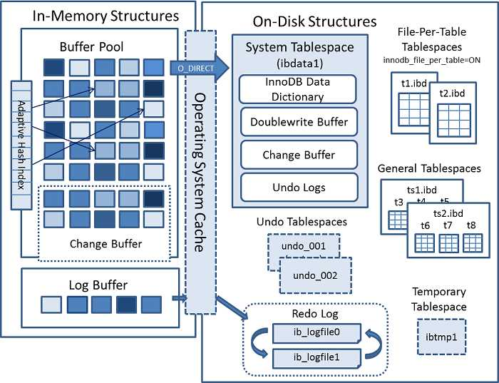
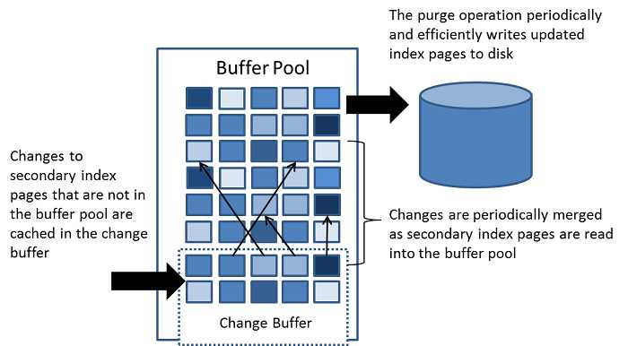

将数据页从磁盘读入内存中涉及随机IO访问，这也是数据库里面成本最高的操作之一，而利用写缓存(Change Buffer)可以减少IO操作,从而提升数据库性能。
总结: 写缓存就是将所要修改的数据暂存在一个缓存区，在恰当的时候再写入磁盘，减少IO操作
写缓存简介
写缓存(Change Buffer)是一种特殊的数据结构，用于在对数据变更时，如果数据所在的数据页没有在Buffer pool中的话，在不影响数据一致性的前提下，InnoDB引擎会将对数据的操作缓存在Change Buffer中,这样就省去了从磁盘中读入这个数据页。
InnoDB架构图
关于MySQL写缓存（Change Buffer),先来看看 InnoDB 的技术架构图：

写缓存出发
Change Buffer是Buffer Pool中的一部分，虽然Change Buffer名字叫 Buffer，但是它也是可以持久化的，在右边的System Tablespace中可以看到持久化Change Buffer的空间。触发写缓存（Change Buffer）持久化操作有以下几种情况:
- 数据库空闲时，后台有线程定时持久化
- 数据库缓冲池不够用时
- 数据库正常关闭时
- redo log 写满时
Change Buffer 的架构图

从图中看出修改的二级页面不在缓冲池的话，会将更新缓存到Change buffer
merge数据
图中详细的描述了 Change Buffer 的功能，Change Buffer中的数据最终还是会刷回到数据所在的原始数据页中，Change Buffer数据应用到原始数据页，得到新的数据页的过程称之为merge。merge过程中只会将Change Buffer中与原始数据页有关的数据应用到原始数据页，以下三种情况会发生merge 操作：
- 原始数据页加载到Buffer Pool时。
- 系统后台定时触发 merge 操作。
- MySQL 数据库正常关闭时。
Change Buffer的相关设置
上面就是写缓存（Change Buffer）的相关知识，写缓存（Change Buffer）我们也是可以使用命令参数来控制，MySQL 数据库提供了两个对写缓存（Change Buffer）的参数。
- innodb_change_buffer_max_size
innodb_change_buffer_max_size 表示 Change Buffer 最大大小占 Buffer Pool 的百分比，默认为 25%。最大可以设置为 50%。 - innodb_change_buffering
innodb_change_buffering 参数用来控制对哪些操作启用 Change Buffer 功能，默认是：all。
写缓存应用实例
我们就用一个案例来说明一下 Change Buffer ，首先我们向数据库中插入两条数据：
‘’’ MySQL
mysql> insert into t(id,k) values(id1,k1),(id2,k2);
‘’’
结合下面这张图来分析这两条插入语句
假设当前是 K索引树的状态，K1 所在的数据页 page1 在 Buffer Pool 中，k2 所在的数据页不在 Buffer Pool 中，来看看这两条语句的执行流程：
- 对于 k1 这条数据，Page 1 在内存中，所以直接更新内存，不会使用到 Change Buffer；
- k2 对应的数据页 Page 2 没有在内存中，就在内存的 change buffer 区域，记录下“我要往 Page 2 插入一行”这个信息，这个地方及其关键，并没有从磁盘中将 page2 加载到内存。
- 将上述两个动作记入 redo log 中（图中 3 和 4）。
- 后台线程会定时将 page1 和 Change Buffer 中的数据持久化
主要地方在于步骤二，这就是写缓存（Change Buffer）提高性能的地方，虽然 page2 并没有在内存中，但是并没有妨碍我们往数据库 page2 中插入数据，这就是写缓存（Change Buffer）的巧妙之处，也是写缓存（Change Buffer）提高 MySQL的地方。
Change Buffer 适用场景
Change Buffer 并不是适用于所有场景，以下两种情况不适合开启 Change Buffer ：
数据库都是唯一索引
如果数据库都是唯一索引，那么在每次操作的时候都需要判断索引是否有冲突，势必要将数据加载到缓存中对比，因此也用不到 Change Buffer。写入一个数据后，会立刻读取它
写入一个数据后，会立刻读取它，那么即使满足了条件，将更新先记录在 change buffer，但之后由于马上要访问这个数据页，会立即触发 merge 过程。这样随机访问 IO 的次数不会减少，反而增加了 change buffer 的维护代价。所以，对于这种业务模式来说，change buffer 反而起到了副作用。
以下几种情况开启 Change Buffer，会使得 MySQL 数据库明显提升：
- 数据库大部分是非唯一索引
- 业务是写多读少
- 写入数据之后并不会立即读取它
作者：平头哥的技术博文
链接：https://juejin.im/post/5e538d7ff265da5715630e8d
来源：掘金
著作权归作者所有。商业转载请联系作者获得授权，非商业转载请注明出处。
https://juejin.im/post/5e538d7ff265da5715630e8d?utm_source=gold_browser_extension